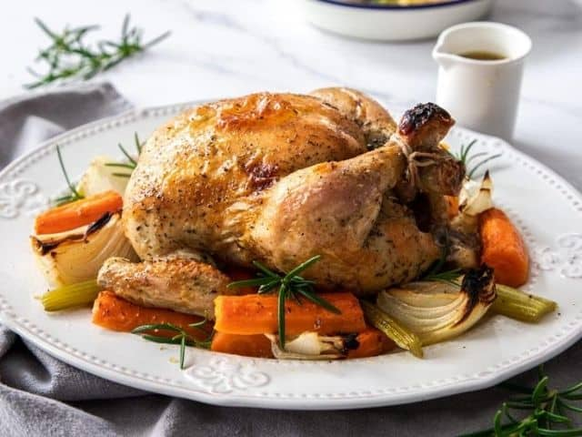
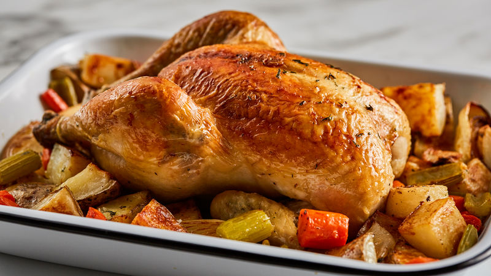

Back to Recipes
Roast Chicken, Roast Veg

Description
This one pan creation is quick, easy and more importantly, delicious. All you will need is a few things to create the
perfect Sunday lunch!
You can serve this with a side of chicken gravy or extra vegetables if desired.
So what are you waiting for? Dive into the ingredients list below:
Ingredients (serves 4)
- 1 Medium Chicken
- 3 Carrots
- 2 Brown Onions
- 2 Parsnips
- 1 Broccoli Head
- 3 tbsp Olive Oil
- 500g Red potatoes
- 1 tbsp Oregano
- 1 tsbp Basil
- 1 tbsp Thyme
- 1 tsp Salt
- 1 tsp Pepper

Method
- Set oven to 200 degrees Celcius and Rub your chicken with the herbs, salt and pepper. Peel one of the onions and insert inside the
chicken.
- Cut up into chunks your potatoes, parsnips, carrots and onion. Cut off the heads of the broccoli.
- Thrown into a large pan and pour on your olive oil and herbs. Mix togther.
- Place the chicken on top of the veg and put in oven for 1 hour.
- When ready, check the chiken juices run clear (that means its cooked) and serve.
- Serve with gravy if that takes your fancy!
Conclusion
Now I hope your house smells with roasted goodness. Sit down and dig in with the family!
Back to Top
Carls Famous Turkey Chilli
Power Porridge